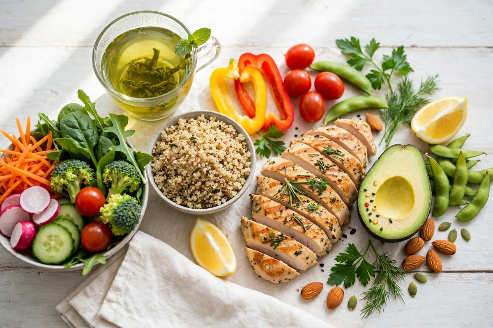

Diet and Metabolism — What Really Affects Your Calorie Burn
How metabolism works, what speeds it up, what slows it down, and which claims are myths.
What metabolism means
Metabolism is the sum of all the chemical processes that keep you alive, and in weight-loss terms it usually means how many calories you burn each day. Most of your daily burn, about 60 to 70 percent, is your basal metabolic rate: the energy needed to keep your heart beating, your lungs working, and your body warm. About 10 percent goes to digesting food, and the rest goes to movement, both exercise and everyday activity such as walking, standing, and fidgeting. Understanding these parts helps you see which levers you can actually pull.
What determines your burn
The biggest factors are your size, muscle mass, age, and sex. Larger bodies burn more, because there is more tissue to maintain. Muscle burns more calories than fat, so people with more muscle have a higher resting burn. Metabolism slows with age, partly because muscle is lost and activity falls. Men usually burn more than women of the same weight, because they typically have more muscle. These factors are mostly fixed, which is why two people on the same diet can lose weight at different rates. Comparing yourself to someone else is rarely useful.
Does dieting slow metabolism?
Yes, a little, and it is normal. As you lose weight, a smaller body needs fewer calories, so your burn falls. This is called metabolic adaptation, and it accounts for most of the slowdown people notice. A smaller part is the body becoming more efficient, burning slightly less for the same activity. The slowdown is not damage, and it is not permanent: it reverses when you eat more and regain weight. It is also smaller than many people fear, usually a few hundred calories at most. Strength training and protein help limit it by preserving muscle.
What actually boosts metabolism
The most reliable ways to raise your burn are to move more and keep muscle. Strength training twice a week preserves muscle, which keeps your resting burn higher. Walking more, taking the stairs, and standing rather than sitting all add up through everyday activity. Protein has a higher thermic effect than carbohydrate or fat, meaning your body burns more calories digesting it, though the difference is modest. Caffeine and green tea raise burn slightly, by a few dozen calories a day. None of these is dramatic alone, but together they add up to a meaningful difference over months.
Metabolism myths
Many products claim to boost metabolism dramatically, but the evidence is weak. Spicy food, ice-cold water, and special supplements raise burn by tiny amounts, if at all, and no supplement has been shown to cause meaningful weight loss on its own. Eating six small meals does not raise metabolism compared with three meals of the same total calories. Skipping meals does not put your body into starvation mode after a day or two; that idea is a myth, though long, severe restriction does lower burn. Be sceptical of any product that promises a fast metabolism without diet or exercise.
Working with your metabolism
Accept your metabolism as it is and work with it. Set your calorie target from your current weight using the calculator on our home page, and adjust it as you lose weight, because your burn falls as you get smaller. Keep protein and strength training in the plan to protect muscle. Move more during the day, not just in workouts. Sleep well, because short sleep lowers burn and raises hunger. And remember that a slower metabolism is not a reason weight loss is impossible; it is a reason the deficit needs to be realistic and the plan needs to be patient.
Frequently Asked Questions
Can I speed up my metabolism?
A little. Strength training, more daily movement, and enough protein help preserve muscle and raise your burn. No food or supplement produces a large, lasting increase.
Does dieting damage your metabolism?
No, not permanently. Your burn falls as you lose weight because a smaller body needs less energy. This is normal adaptation, and it reverses if you regain weight.
Do small frequent meals boost metabolism?
No. Meal frequency does not change total daily burn when total calories are the same. Eat in whatever pattern helps you control hunger.